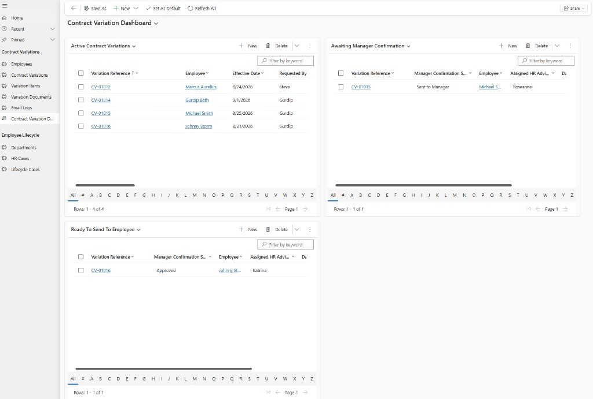
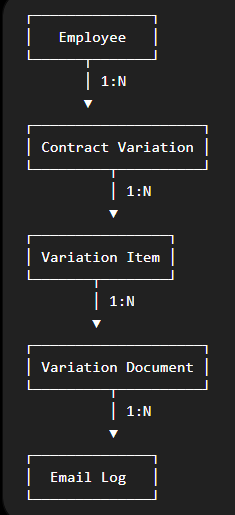
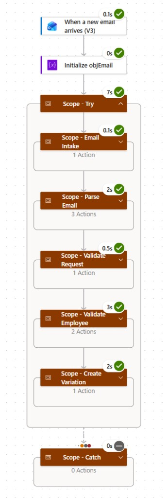
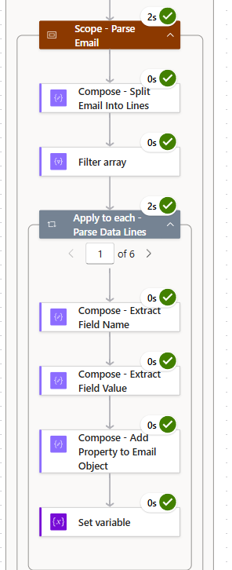
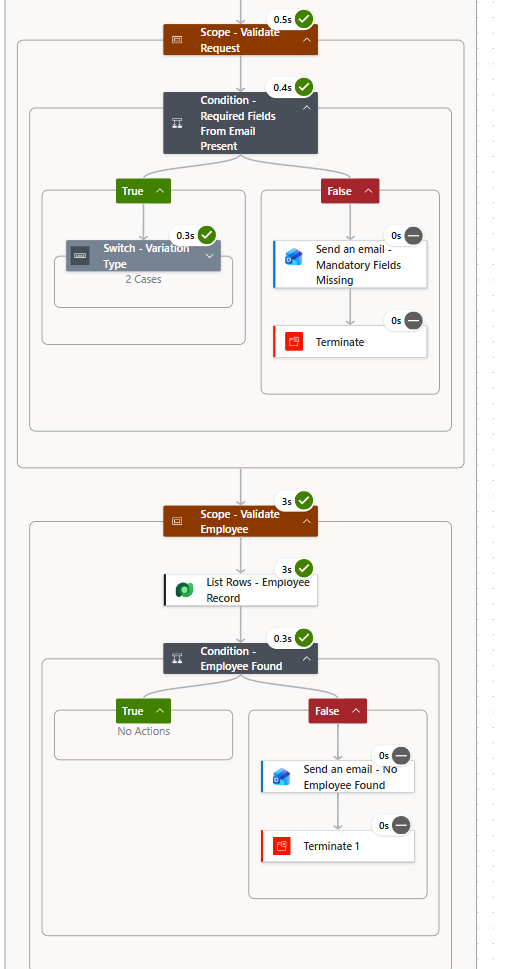

Contract Variation Hub
End-to-end HR contract change management
Model-Driven App · Dataverse · Power Automate · Outlook · SharePoint
Problem
Contract variations move through email, HR systems, Word documents, SharePoint, spreadsheets and multiple stakeholders — creating repeated data entry and limited visibility of case progress.
Goal: create one controlled process to capture, validate, track and progress each request.
Solution
A Dataverse-backed Model-Driven App provides the operational hub, while Power Automate handles email intake, validation and workflow orchestration.
Outlook → Power Automate → Dataverse → Model-Driven App → SharePoint / Outlook
Application

Forms, business rules, statuses and related Variation Items give HR one structured place to manage each request.

Views surface variations awaiting action, active/overdue cases and overall case status.
Data Model

I used a 1:N structure so one request can contain multiple contractual changes without duplicating the parent case.
Automation

Email Intake → Parse → Validate Request → Validate Employee → Create Variation, with scoped TRY/CATCH error handling.

The flow splits email content into an array and uses Power Automate expressions including
substring(), indexOf(), trim() and addProperty() to construct a reusable object for downstream processing.
Mandatory fields and the employee record are validated before Dataverse records are created, preventing incomplete requests entering the application.
Built / Next
Built
Model-Driven App · Dataverse model · Business rules · Dashboard · Email parsing · Validation · Case creation · Error handling
Next
Document generation · SharePoint storage · Stakeholder communications · Multi-change processing · Duplicate prevention
Technical Scope
Power Apps — Model-Driven Apps, forms, views, business rules
Dataverse — relational modelling, lookups, 1:N relationships
Power Automate — arrays, objects, expressions, validation, error handling
Delivery — requirements, solution design, testing, debugging, MVP scoping